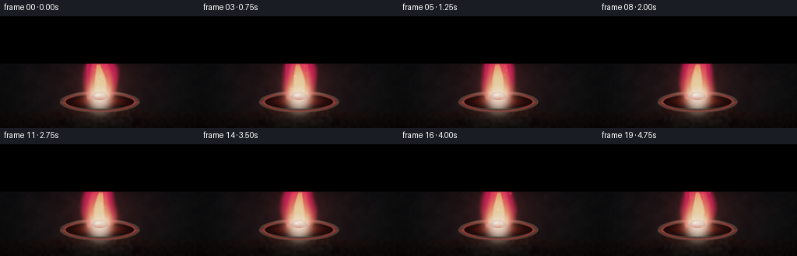
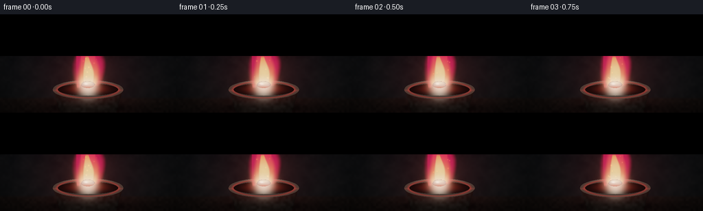
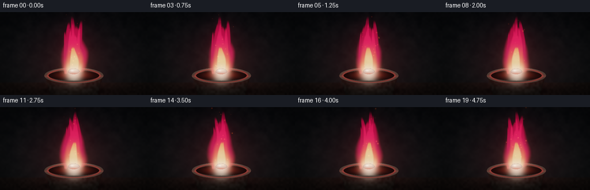
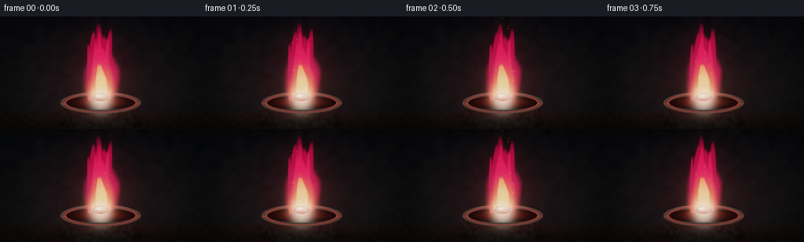
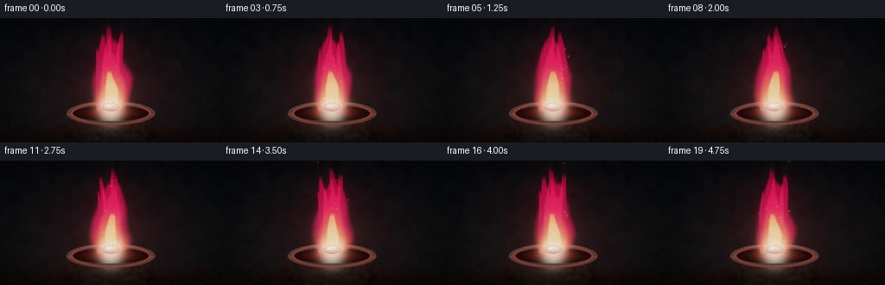
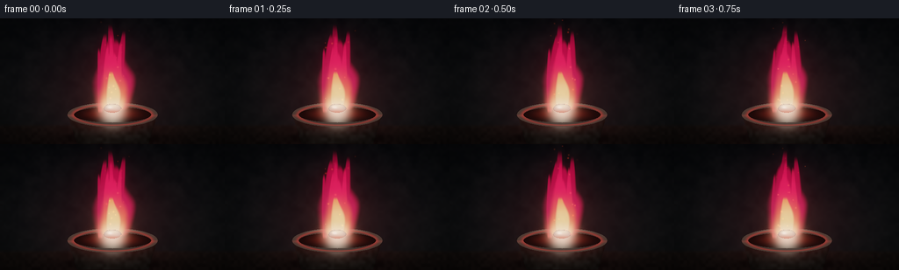
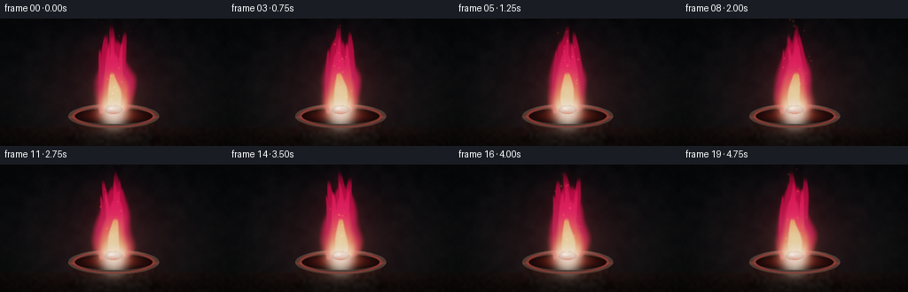
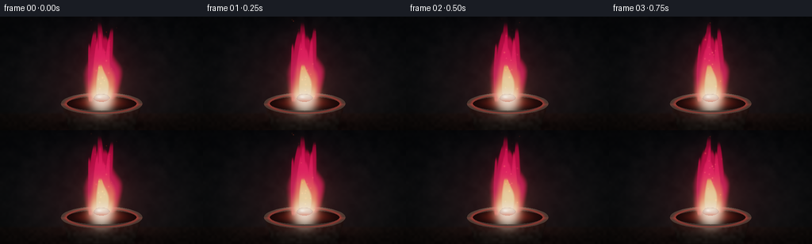

CODING AGENTS AS PIXEL WORLD MODELS
traex/DeepSeek-V4.1-Flash · phygen_128
点击播放 · 原生 RGB 像素
逐轮保存的候选
回放视频、检查图与代码变化。
每份候选均可单独播放。实际图片检查记录在下方工具轨迹中。
候选 01播放与检查图
点击播放 · 原生 RGB 像素


展开代码变化
--- 上一保存版本
+++ 本次保存版本
@@ -0,0 +1,327 @@
+"""Procedural RGB render of a steadily burning lithium fragment."""
+
+from pathlib import Path
+
+import numpy as np
+from PIL import Image, ImageFilter
+
+import artifact_io
+
+
+OUT_W, OUT_H = 256, 144
+W, H = OUT_W * 2, OUT_H * 2
+FPS = 4.0
+FRAMES = 20
+DURATION = FRAMES / FPS
+
+
+def smoothstep(edge0, edge1, value):
+ x = np.clip((value - edge0) / (edge1 - edge0), 0.0, 1.0)
+ return x * x * (3.0 - 2.0 * x)
+
+
+def lerp(a, b, amount):
+ return a + (b - a) * amount
+
+
+def tri_color(t, stops):
+ result = np.zeros(t.shape + (3,), dtype=np.float32)
+ positions = np.array([stop[0] for stop in stops], dtype=np.float32)
+ colors = np.array([stop[1] for stop in stops], dtype=np.float32) / 255.0
+ for index in range(len(stops) - 1):
+ lo, hi = positions[index], positions[index + 1]
+ local = np.clip((t - lo) / max(hi - lo, 1e-5), 0.0, 1.0)
+ local = local * local * (3.0 - 2.0 * local)
+ mix = colors[index] + (colors[index + 1] - colors[index]) * local[..., None]
+ result = np.where(((t >= lo) & (t <= hi))[..., None], mix, result)
+ result = np.where((t < positions[0])[..., None], colors[0], result)
+ result = np.where((t > positions[-1])[..., None], colors[-1], result)
+ return result
+
+
+def ellipse(X, Y, cx, cy, rx, ry):
+ return ((X - cx) / rx) ** 2 + ((Y - cy) / ry) ** 2
+
+
+def make_texture(rng, width, height, grid_w, grid_h):
+ small = rng.random((grid_h, grid_w), dtype=np.float32)
+ image = Image.fromarray(np.clip(small * 255, 0, 255).astype(np.uint8), "L")
+ image = image.resize((width, height), Image.Resampling.BICUBIC)
+ return np.asarray(image, dtype=np.float32) / 255.0
+
+
+def blur_rgb(image, radius):
+ encoded = np.clip(image * 255.0, 0, 255).astype(np.uint8)
+ blurred = Image.fromarray(encoded, "RGB").filter(ImageFilter.GaussianBlur(radius))
+ return np.asarray(blurred, dtype=np.float32) / 255.0
+
+
+def add_glow(target, x, y, sigma, color, strength):
+ radius = max(2, int(np.ceil(sigma * 4.0)))
+ x0, x1 = max(0, int(x) - radius), min(W, int(x) + radius + 1)
+ y0, y1 = max(0, int(y) - radius), min(H, int(y) + radius + 1)
+ if x0 >= x1 or y0 >= y1:
+ return
+ xs = np.arange(x0, x1, dtype=np.float32)
+ ys = np.arange(y0, y1, dtype=np.float32)
+ gx = np.exp(-0.5 * ((xs - x) / sigma) ** 2)
+ gy = np.exp(-0.5 * ((ys - y) / sigma) ** 2)
+ glow = gy[:, None] * gx[None, :]
+ target[y0:y1, x0:x1] += glow[..., None] * np.asarray(color, dtype=np.float32) * strength
+
+
+def spectral_noise(X, Y, time, coefficients):
+ field = np.zeros_like(X, dtype=np.float32)
+ norm = 0.0
+ for fx, fy, speed, phase, amplitude in coefficients:
+ field += amplitude * np.sin(
+ 2.0 * np.pi * (fx * X / W + fy * Y / H + speed * time) + phase
+ )
+ norm += amplitude
+ return field / norm
+
+
+def tongue_density(X, Y, time, base_x, base_y, top_y, width, sway, phase, noise):
+ span = base_y - top_y
+ t = (base_y - Y) / span
+ tt = np.clip(t, 0.0, 1.0)
+ center = (
+ base_x
+ + sway * tt * np.sin(2.0 * np.pi * (0.42 * tt + phase + 0.17 * time))
+ + 3.5 * tt * noise
+ )
+ half = width * (0.45 + 0.55 * np.sin(np.pi * tt**0.78) ** 0.82) * (1.0 - 0.54 * tt)
+ distance = 1.0 - np.abs(X - center) / np.maximum(half, 1.0)
+ distance += (0.11 + 0.10 * tt) * noise
+ body = smoothstep(-0.24, 0.30, distance)
+ vertical = smoothstep(0.0, 0.055, t) * (1.0 - smoothstep(0.91, 1.02, t))
+ return body * vertical
+
+
+def build_frame(index, rng, textures, flow_a, flow_b):
+ time = index / FPS
+ X, Y = np.meshgrid(np.arange(W, dtype=np.float32), np.arange(H, dtype=np.float32))
+ bg_texture, ceramic_texture = textures
+ noise_a = spectral_noise(X, Y, time, flow_a)
+ noise_b = spectral_noise(X, Y, time, flow_b)
+
+ # Deep, quiet studio background with a dark tabletop.
+ yn = Y / (H - 1.0)
+ scene = np.empty((H, W, 3), dtype=np.float32)
+ scene[..., 0] = 0.018 + 0.026 * yn**0.8
+ scene[..., 1] = 0.021 + 0.025 * yn**0.8
+ scene[..., 2] = 0.027 + 0.021 * yn**0.8
+ scene += (bg_texture[..., None] - 0.5) * np.array([0.012, 0.010, 0.009], dtype=np.float32)
+
+ horizon = 246.0
+ table = smoothstep(horizon - 7.0, horizon + 4.0, Y)
+ table_grad = np.clip((Y - horizon) / (H - horizon), 0.0, 1.0)
+ table_color = np.zeros_like(scene)
+ table_color[..., 0] = 0.050 - 0.018 * table_grad
+ table_color[..., 1] = 0.037 - 0.014 * table_grad
+ table_color[..., 2] = 0.032 - 0.012 * table_grad
+ table_color += (ceramic_texture[..., None] - 0.5) * np.array([0.011, 0.007, 0.005])
+ scene = lerp(scene, table_color, table[..., None])
+
+ # A broad carmine bounce keeps the metal and ceramic inside the same light.
+ bounce = np.exp(-(((X - 256.0) / 150.0) ** 2 + ((Y - 178.0) / 128.0) ** 2) ** 1.2)
+ scene += bounce[..., None] * np.array([0.052, 0.007, 0.010], dtype=np.float32)
+
+ # Cast shadow and the dark graphite crucible.
+ shadow = np.exp(-(((X - 256.0) / 118.0) ** 2 + ((Y - 274.0) / 15.0) ** 2) ** 2)
+ scene *= 1.0 - 0.58 * shadow[..., None]
+
+ body_u = np.clip((Y - 218.0) / 67.0, 0.0, 1.0)
+ body_half = 103.0 - 21.0 * body_u
+ body_mask = (Y >= 214.0) & (Y <= 286.0) & (np.abs(X - 256.0) <= body_half)
+ body_mask |= ellipse(X, Y, 256.0, 220.0, 103.0, 28.0) <= 1.0
+ nx = np.clip((X - 256.0) / np.maximum(body_half, 1.0), -1.0, 1.0)
+ rounded = np.sqrt(np.clip(1.0 - nx**2, 0.0, 1.0))
+ body_light = 0.34 + 0.28 * rounded + 0.08 * np.exp(-((nx + 0.58) / 0.24) ** 2)
+ body_light -= 0.15 * smoothstep(0.48, 1.0, body_u)
+ body_color = np.zeros_like(scene)
+ body_color[..., 0] = 0.060 * body_light + 0.022
+ body_color[..., 1] = 0.050 * body_light + 0.017
+ body_color[..., 2] = 0.045 * body_light + 0.014
+ body_color += (ceramic_texture[..., None] - 0.5) * 0.018
+ inner_bounce = np.exp(-((Y - 230.0) / 26.0) ** 2) * np.exp(-((X - 256.0) / 86.0) ** 2)
+ body_color += inner_bounce[..., None] * np.array([0.105, 0.008, 0.010], dtype=np.float32)
+ scene = np.where(body_mask[..., None], body_color, scene)
+
+ outer_rim = ellipse(X, Y, 256.0, 220.0, 103.0, 28.0)
+ inner_rim = ellipse(X, Y, 256.0, 220.0, 88.0, 18.0)
+ mouth_mask = inner_rim <= 1.0
+ mouth = np.zeros_like(scene)
+ mouth[..., 0] = 0.030 + 0.010 * smoothstep(0.0, 1.0, (Y - 202.0) / 36.0)
+ mouth[..., 1] = 0.014
+ mouth[..., 2] = 0.014
+ mouth_glow = np.exp(-(((X - 256.0) / 54.0) ** 2 + ((Y - 219.0) / 11.0) ** 2))
+ mouth += mouth_glow[..., None] * np.array([0.24, 0.030, 0.018], dtype=np.float32)
+ scene = np.where(mouth_mask[..., None], mouth, scene)
+
+ ring = (outer_rim <= 1.0) & (inner_rim > 1.0)
+ back_rim = ring & (Y < 220.0)
+ front_rim = ring & (Y >= 220.0)
+ radial = np.sqrt(np.maximum(outer_rim, 0.0))
+ rim_color = np.zeros_like(scene)
+ rim_color[..., 0] = 0.145 + 0.055 * np.exp(-((radial - 0.97) / 0.08) ** 2)
+ rim_color[..., 1] = 0.112 + 0.035 * np.exp(-((radial - 0.97) / 0.08) ** 2)
+ rim_color[..., 2] = 0.101 + 0.025 * np.exp(-((radial - 0.97) / 0.08) ** 2)
+ rim_color += np.exp(-((radial - 0.86) / 0.055) ** 2)[..., None] * np.array(
+ [0.30, 0.025, 0.018], dtype=np.float32
+ )
+ rim_color += np.exp(-((Y - 196.0) / 5.0) ** 2)[..., None] * np.array(
+ [0.055, 0.055, 0.050], dtype=np.float32
+ )
+ scene = np.where(back_rim[..., None], rim_color, scene)
+
+ # Flame envelope: a broad body plus overlapping tapered tongues.
+ common = dict(time=time, noise=noise_a + 0.38 * noise_b)
+ outer_main = tongue_density(X, Y, base_x=256, base_y=213, top_y=47, width=52, sway=6.5, phase=0.11, **common)
+ outer_parts = [
+ tongue_density(X, Y, base_x=256, base_y=211, top_y=15, width=17, sway=7.5, phase=0.27, **common),
+ tongue_density(X, Y, base_x=240, base_y=205, top_y=35, width=15, sway=9.0, phase=0.55, **common),
+ tongue_density(X, Y, base_x=273, base_y=207, top_y=29, width=16, sway=8.5, phase=0.82, **common),
+ tongue_density(X, Y, base_x=228, base_y=218, top_y=68, width=8, sway=4.0, phase=0.40, **common),
+ ]
+ outer_density = np.maximum.reduce([outer_main] + outer_parts)
+ outer_density = np.clip(outer_density, 0.0, 1.0)
+
+ mid_main = tongue_density(X, Y, base_x=256, base_y=211, top_y=76, width=35, sway=5.0, phase=0.18, **common)
+ mid_parts = [
+ tongue_density(X, Y, base_x=256, base_y=208, top_y=37, width=10, sway=5.0, phase=0.32, **common),
+ tongue_density(X, Y, base_x=244, base_y=207, top_y=61, width=9, sway=6.0, phase=0.60, **common),
+ tongue_density(X, Y, base_x=269, base_y=207, top_y=53, width=10, sway=5.5, phase=0.87, **common),
+ ]
+ mid_density = np.maximum.reduce([mid_main] + mid_parts)
+ mid_density = np.clip(mid_density, 0.0, 1.0)
+
+ core_main = tongue_density(X, Y, base_x=256, base_y=210, top_y=121, width=20, sway=3.0, phase=0.23, **common)
+ core_hot = np.exp(
+ -(((X - 256.0) / 27.0) ** 2 + ((Y - 204.0) / 36.0) ** 2) ** 1.25
+ )
+ core_density = np.clip(np.maximum(core_main, core_hot * 0.92), 0.0, 1.0)
+
+ flame_t = np.clip((213.0 - Y) / (213.0 - 15.0), 0.0, 1.0)
+ outer_color = tri_color(
+ flame_t,
+ [(0.0, (255, 48, 48)), (0.34, (255, 18, 70)), (0.72, (225, 5, 53)), (1.0, (120, 2, 30))],
+ )
+ mid_color = tri_color(
+ flame_t,
+ [(0.0, (255, 158, 75)), (0.22, (255, 70, 45)), (0.58, (255, 18, 57)), (1.0, (188, 3, 43))],
+ )
+ core_color = tri_color(
+ flame_t,
+ [(0.0, (255, 244, 212)), (0.22, (255, 201, 115)), (0.52, (255, 113, 43)), (1.0, (255, 43, 29))],
+ )
+
+ scene = scene * (1.0 - 0.62 * outer_density[..., None]) + outer_color * (0.62 * outer_density[..., None])
+ scene = scene * (1.0 - 0.76 * mid_density[..., None]) + mid_color * (0.76 * mid_density[..., None])
+ scene = scene * (1.0 - 0.88 * core_density[..., None]) + core_color * (0.88 * core_density[..., None])
+
+ emission = (
+ outer_color * (0.34 * outer_density[..., None])
+ + mid_color * (0.46 * mid_density[..., None])
+ + core_color * (0.70 * core_density[..., None])
+ )
+
+ # A compact lithium nugget sits at the flame root and is visible through the core.
+ nugget_noise = ceramic_texture - 0.5
+ nugget_shape = ellipse(X, Y, 256.0, 205.5, 20.0, 10.2) - 0.16 * nugget_noise
+ nugget_mask = nugget_shape <= 1.0
+ ny = np.clip((Y - 205.5) / 10.2, -1.0, 1.0)
+ nx_metal = np.clip((X - 256.0) / 20.0, -1.0, 1.0)
+ dome = np.sqrt(np.clip(1.0 - nx_metal**2 - ny**2, 0.0, 1.0))
+ metal = np.zeros_like(scene)
+ metal[..., 0] = 0.43 + 0.20 * dome
+ metal[..., 1] = 0.43 + 0.20 * dome
+ metal[..., 2] = 0.41 + 0.18 * dome
+ metal += np.exp(-((nx_metal + 0.28) ** 2 / 0.08 + (ny + 0.30) ** 2 / 0.10))[..., None] * 0.55
+ top_heat = np.exp(-((nx_metal / 0.78) ** 2 + ((ny + 0.56) / 0.42) ** 2))
+ metal = lerp(metal, np.array([1.0, 0.93, 0.75], dtype=np.float32), top_heat[..., None] * 0.72)
+ red_ref = np.exp(-(((X - 256.0) / 21.0) ** 2 + ((Y - 214.0) / 5.0) ** 2))
+ metal = lerp(metal, np.array([0.62, 0.14, 0.10], dtype=np.float32), red_ref[..., None] * 0.55)
+ edge = smoothstep(0.88, 1.0, nugget_shape)
+ metal *= (1.0 - 0.35 * edge[..., None])
+ scene = np.where(nugget_mask[..., None], metal, scene)
+
+ # Warm caustic at the root and restrained rising sparks.
+ root_glow = np.exp(-(((X - 256.0) / 34.0) ** 2 + ((Y - 207.0) / 18.0) ** 2))
+ scene += root_glow[..., None] * np.array([0.32, 0.055, 0.025], dtype=np.float32)
+ emission += root_glow[..., None] * np.array([0.44, 0.12, 0.04], dtype=np.float32)
+
+ spark_rng = np.random.default_rng(12800 + index)
+ for spark in range(25):
+ life = spark_rng.uniform(1.8, 4.4)
+ offset = spark_rng.uniform(0.0, life)
+ age = (time + offset) % life
+ base_x = 256.0 + spark_rng.uniform(-27.0, 27.0)
+ drift = spark_rng.uniform(-14.0, 14.0)
+ rise = spark_rng.uniform(68.0, 145.0)
+ sx = base_x + drift * age + spark_rng.uniform(2.0, 6.0) * np.sin(age * 3.1 + spark)
+ sy = 207.0 - rise * age + 3.0 * np.sin(age * 2.4 + spark * 0.7)
+ if -4.0 < sy < 216.0 and 0.0 < sx < W:
+ fade = (1.0 - age / life) ** 1.4
+ size = spark_rng.uniform(0.65, 1.55)
+ color = np.array([1.0, spark_rng.uniform(0.12, 0.34), spark_rng.uniform(0.03, 0.12)], dtype=np.float32)
+ add_glow(scene, sx, sy, size, color, 0.65 * fade)
+ add_glow(emission, sx, sy, size * 1.7, color, 0.45 * fade)
+
+ # Near rim is drawn last so the flame visibly emerges from inside the vessel.
+ front_color = rim_color.copy()
+ front_color += np.exp(-((Y - 222.0) / 3.5) ** 2)[..., None] * np.array(
+ [0.10, 0.015, 0.012], dtype=np.float32
+ )
+ scene = np.where(front_rim[..., None], front_color, scene)
+
+ # Multi-scale bloom, filmic shoulder, vignette, and very light sensor grain.
+ small_glow = blur_rgb(emission, 8.0)
+ large_glow = blur_rgb(emission, 32.0)
+ scene += small_glow * 0.22 + large_glow * 0.15
+
+ scene = 1.0 - np.exp(-np.maximum(scene, 0.0) * 1.75)
+ radius = np.sqrt(((X - 256.0) / 290.0) ** 2 + ((Y - 142.0) / 190.0) ** 2)
+ vignette = np.clip(1.0 - 0.44 * smoothstep(0.42, 1.18, radius), 0.0, 1.0)
+ scene *= vignette[..., None]
+ scene += (ceramic_texture[..., None] - 0.5) * 0.008
+
+ # Output-resampling also removes sub-pixel aliasing from the procedural edges.
+ encoded = np.clip(scene * 255.0 + 0.5, 0, 255).astype(np.uint8)
+ image = Image.fromarray(encoded, "RGB").resize((OUT_W, OUT_H), Image.Resampling.LANCZOS)
+ return np.asarray(image, dtype=np.uint8)
+
+
+def main():
+ case_dir = Path(__file__).resolve().parent
+ rng = np.random.default_rng(128)
+ textures = (
+ make_texture(rng, W, H, 28, 16),
+ make_texture(rng, W, H, 72, 40),
+ )
+
+ flow_rng = np.random.default_rng(990)
+ flows = []
+ for _ in range(2):
+ coefficients = []
+ for _ in range(10):
+ coefficients.append(
+ (
+ flow_rng.uniform(1.1, 5.8),
+ flow_rng.uniform(0.7, 3.8),
+ flow_rng.uniform(0.09, 0.34),
+ flow_rng.uniform(0.0, 2.0 * np.pi),
+ flow_rng.uniform(0.35, 1.0),
+ )
+ )
+ flows.append(coefficients)
+
+ frames = np.stack(
+ [build_frame(index, rng, textures, flows[0], flows[1]) for index in range(FRAMES)]
+ )
+ artifact_io.save(frames, case_dir)
+ print(f"Saved {frames.shape} to {case_dir}")
+
+
+if __name__ == "__main__":
+ main()
候选 02播放与检查图
点击播放 · 原生 RGB 像素


展开代码变化
--- 上一保存版本
+++ 本次保存版本
@@ -90,9 +90,11 @@
+ sway * tt * np.sin(2.0 * np.pi * (0.42 * tt + phase + 0.17 * time))
+ 3.5 * tt * noise
)
- half = width * (0.45 + 0.55 * np.sin(np.pi * tt**0.78) ** 0.82) * (1.0 - 0.54 * tt)
+ taper = np.clip(np.sin(np.pi * tt**0.78), 0.0, 1.0)
+ half = width * (0.45 + 0.55 * taper**0.82) * (1.0 - 0.54 * tt)
distance = 1.0 - np.abs(X - center) / np.maximum(half, 1.0)
distance += (0.11 + 0.10 * tt) * noise
+ distance = np.nan_to_num(distance, nan=-1.0)
body = smoothstep(-0.24, 0.30, distance)
vertical = smoothstep(0.0, 0.055, t) * (1.0 - smoothstep(0.91, 1.02, t))
return body * vertical
候选 03播放与检查图
点击播放 · 原生 RGB 像素


展开代码变化
--- 上一保存版本
+++ 本次保存版本
@@ -45,14 +45,14 @@
def make_texture(rng, width, height, grid_w, grid_h):
small = rng.random((grid_h, grid_w), dtype=np.float32)
- image = Image.fromarray(np.clip(small * 255, 0, 255).astype(np.uint8), "L")
+ image = Image.fromarray(np.clip(small * 255, 0, 255).astype(np.uint8))
image = image.resize((width, height), Image.Resampling.BICUBIC)
return np.asarray(image, dtype=np.float32) / 255.0
def blur_rgb(image, radius):
encoded = np.clip(image * 255.0, 0, 255).astype(np.uint8)
- blurred = Image.fromarray(encoded, "RGB").filter(ImageFilter.GaussianBlur(radius))
+ blurred = Image.fromarray(encoded).filter(ImageFilter.GaussianBlur(radius))
return np.asarray(blurred, dtype=np.float32) / 255.0
@@ -87,13 +87,13 @@
tt = np.clip(t, 0.0, 1.0)
center = (
base_x
- + sway * tt * np.sin(2.0 * np.pi * (0.42 * tt + phase + 0.17 * time))
- + 3.5 * tt * noise
+ + sway * tt * np.sin(2.0 * np.pi * (0.42 * tt + phase + 0.24 * time))
+ + 5.5 * tt * noise
)
taper = np.clip(np.sin(np.pi * tt**0.78), 0.0, 1.0)
half = width * (0.45 + 0.55 * taper**0.82) * (1.0 - 0.54 * tt)
distance = 1.0 - np.abs(X - center) / np.maximum(half, 1.0)
- distance += (0.11 + 0.10 * tt) * noise
+ distance += (0.17 + 0.16 * tt) * noise
distance = np.nan_to_num(distance, nan=-1.0)
body = smoothstep(-0.24, 0.30, distance)
vertical = smoothstep(0.0, 0.055, t) * (1.0 - smoothstep(0.91, 1.02, t))
@@ -290,7 +290,7 @@
# Output-resampling also removes sub-pixel aliasing from the procedural edges.
encoded = np.clip(scene * 255.0 + 0.5, 0, 255).astype(np.uint8)
- image = Image.fromarray(encoded, "RGB").resize((OUT_W, OUT_H), Image.Resampling.LANCZOS)
+ image = Image.fromarray(encoded).resize((OUT_W, OUT_H), Image.Resampling.LANCZOS)
return np.asarray(image, dtype=np.uint8)
候选 04播放与检查图
点击播放 · 原生 RGB 像素


展开代码变化
--- 上一保存版本
+++ 本次保存版本
@@ -253,7 +253,7 @@
scene += root_glow[..., None] * np.array([0.32, 0.055, 0.025], dtype=np.float32)
emission += root_glow[..., None] * np.array([0.44, 0.12, 0.04], dtype=np.float32)
- spark_rng = np.random.default_rng(12800 + index)
+ spark_rng = np.random.default_rng(12800)
for spark in range(25):
life = spark_rng.uniform(1.8, 4.4)
offset = spark_rng.uniform(0.0, life)
可观测工具轨迹
实际执行的命令与返回图片。
命令 1exit 0
/bin/bash -c "pwd && rg --files -g 'prompt.txt' -g 'GENERATION_RULES.md' -g 'task_spec.json' -g '"'!node_modules'"' -g '"'!vendor'"'"
命令 2exit 0
/bin/bash -c 'ls -la'
命令 3exit 0
/bin/bash -c "find . -maxdepth 2 -type f | sort | sed -n '1,200p'"
命令 4exit 0
/bin/bash -c 'cat GENERATION_RULES.md'
命令 5exit 0
/bin/bash -c 'cat task_spec.json'
命令 6exit 0
/bin/bash -c 'cat prompt.txt'
命令 7exit 0
/bin/bash -c "sed -n '1,240p' artifact_io.py && sed -n '1,240p' player_template.html"
命令 8exit 0
/bin/bash -c "python - <<'PY'
import numpy, PIL
print('numpy', numpy.__version__)
print('PIL', PIL.__version__)
PY"命令 9exit 0
/bin/bash -c 'command -v ffmpeg || true; command -v convert || true'
命令 10exit 0
/bin/bash -c 'python generate.py'
命令 11exit 0
/bin/bash -c 'python generate.py'
命令 12exit 0
/bin/bash -c "python - <<'PY'
from PIL import Image
import numpy as np
for i in [0,5,10,15,19]:
a=np.array(Image.open(f'frames/{i:02d}.png'))
lum=a.mean(2)
red=(a[...,0].astype(int)-a[...,1].astype(int)>35)&(a[...,0]>70)
hot=(a[...,0]>210)&(a[...,1]>80)
print(i,'mean',a.mean((0,1)).round(1),'lum',lum.mean().round(1),'red%',round(red.mean()*100,1),'hot%',round(hot.mean()*100,1),'bbox', (np.where(red)[1].min(),np.where(red)[0].min(),np.where(red)[1].max(),np.where(red)[0].max()))
PY"命令 13exit 0
/bin/bash -c "python - <<'PY'
from PIL import Image
import numpy as np
chars=' .:-=+*#%@'
for i in [0,10,19]:
a=np.array(Image.open(f'frames/{i:02d}.png').convert('L').resize((64,36)))
print('\\nFRAME',i)
for row in a:
print(''.join(chars[min(len(chars)-1,int(v)*len(chars)//256)] for v in row))
PY"命令 14exit 0
/bin/bash -c "python - <<'PY'
from PIL import Image
import numpy as np
from collections import Counter
frames=[np.array(Image.open(f'frames/{i:02d}.png')) for i in range(20)]
for i in [0,10,19]:
a=frames[i]
q=(a//24)*24
c=Counter(map(tuple,q.reshape(-1,3)))
print('\\n',i,c.most_common(14))
diffs=[np.abs(frames[i].astype(int)-frames[i-1]).mean() for i in range(1,20)]
print('diffs',np.round(diffs,2))
print('per-frame red bbox')
for i,a in enumerate(frames):
m=(a[...,0].astype(int)>a[...,1].astype(int)+30)&(a[...,0]>55)
ys,xs=np.where(m)
print(i, (xs.min(),ys.min(),xs.max(),ys.max()), round(m.mean()*100,1))
PY"命令 15exit 0
/bin/bash -c "python - <<'PY' import importlib.util for name in ['matplotlib','imageio','cv2','scipy']: print(name, bool(importlib.util.find_spec(name))) PY"
命令 16exit 0
/bin/bash -c 'command -v chafa || command -v viu || command -v jp2 || command -v img2txt || true'
命令 17exit 0
/bin/bash -c 'python generate.py'
命令 18exit 0
/bin/bash -c "python - <<'PY'
from PIL import Image
import numpy as np
frames=[np.array(Image.open(f'frames/{i:02d}.png')) for i in range(20)]
d=[np.abs(frames[i].astype(int)-frames[i-1]).mean() for i in range(1,20)]
print('adjacent diffs',np.round(d,2),'mean',round(np.mean(d),2))
print('all unique colors',len(np.unique(np.stack(frames).reshape(-1,3),axis=0)))
for i in [0,5,10,15,19]:
a=frames[i]
print(i,'mean',a.mean((0,1)).round(1),'max',a.reshape(-1,3).max(0),'red',round((((a[...,0].astype(int)-a[...,1].astype(int))>35)&(a[...,0]>70)).mean()*100,1),'hot',round(((a[...,0]>210)&(a[...,1]>80)).mean()*100,1))
PY"命令 19exit 0
/bin/bash -c "python - <<'PY'
from PIL import Image, ImageDraw
im=Image.open('inspection.png')
im.resize((im.width*2,im.height*2)).save('.tmp/inspection_2x.png')
print(im.size)
PY"命令 20exit 0
/bin/bash -c 'python generate.py'
命令 21exit 0
/bin/bash -c "python - <<'PY'
from pathlib import Path
import json, re
import numpy as np
from PIL import Image
spec=json.loads(Path('task_spec.json').read_text())
frames=np.stack([np.asarray(Image.open(f'frames/{i:02d}.png')) for i in range(spec['frames'])])
z=np.load('pixels.npz')['pixels']
print('frame_shape',frames.shape,'dtype',frames.dtype,'expected',(spec['frames'],spec['height'],spec['width'],3))
print('npz_shape',z.shape,'npz_dtype',z.dtype)
print('index_bytes',Path('index.html').stat().st_size,'pngs',len(list(Path('frames').glob('*.png'))))
print('finite_uint8',np.isfinite(frames).all(),frames.min(),frames.max())
print('adjacent_mean_abs_diff',round(float(np.mean([np.abs(frames[i].astype(int)-frames[i-1]).mean() for i in range(1,len(frames))])),3))
print('caption',json.loads(re.search(r'const DATA=(\\{.*?\\}),W=',Path('index.html').read_text()).group(1))['caption'])
PY"命令 22exit 0
/bin/bash -c "python - <<'PY'
from pathlib import Path
import json,re
import numpy as np
from PIL import Image
frames=np.stack([np.asarray(Image.open(f'frames/{i:02d}.png')) for i in range(20)])
diffs=np.abs(frames[1:].astype(np.int16)-frames[:-1].astype(np.int16))
region=diffs[:,10:125,65:190]
print('full mean diff',round(float(diffs.mean()),3))
print('flame-region mean diff',round(float(region.mean()),3))
print('max per-pixel frame diff',int(diffs.max()))
print('loop seam mean diff',round(float(np.abs(frames[0].astype(int)-frames[-1]).mean()),3))
html=Path('index.html').read_text()
payload=re.search(r'const DATA=(\\{.*?\\}),W=',html).group(1)
data=json.loads(payload)
print('player frames/fps/size',data['frames'],data['fps'],data['width'],data['height'])
print('first+delta payloads',len(data['deltas']),bool(data['first']))
print('required files', {p:Path(p).exists() for p in ['generate.py','pixels.npz','inspection.png','transition_check.png','index.html']})
PY
if command -v node >/dev/null; then node --check <(sed -n \"s/.*<script>'use strict';\\(.*\\)<\\/script>.*/\\1/p\" index.html) 2>&1 || true; fi"命令 23exit 0
/bin/bash -c "sed -n \"s/.*<script>'use strict';\\(.*\\)<\\/script>.*/\\1/p\" index.html | node --check"
保存候选 4 份；完成命令 23 次；可验证图片返回 0 张。原始 API 响应与完整日志保留在本地。